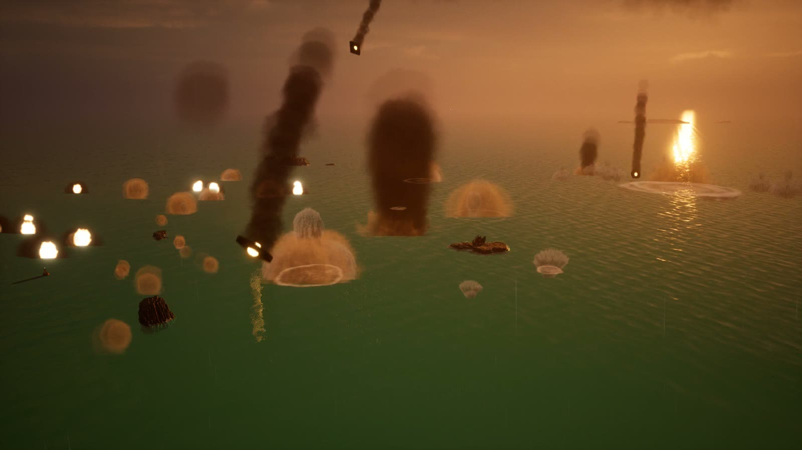
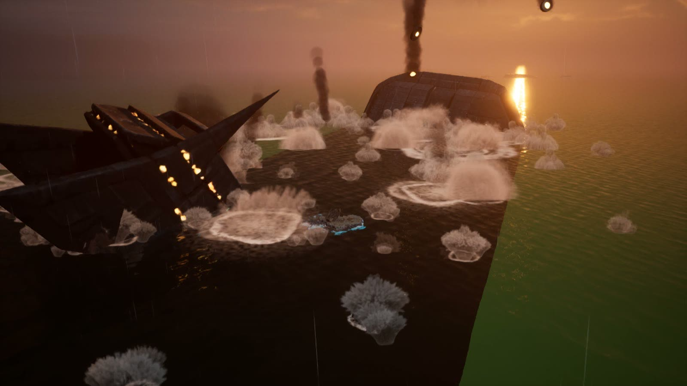
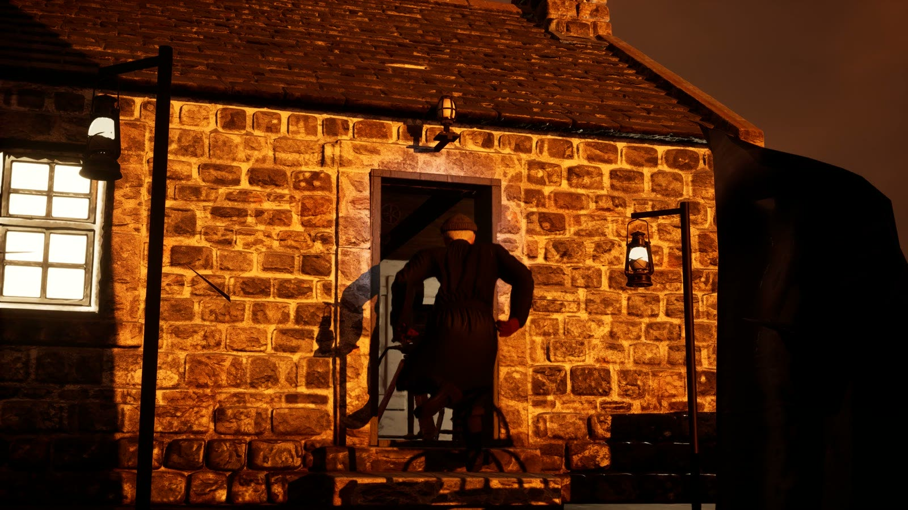
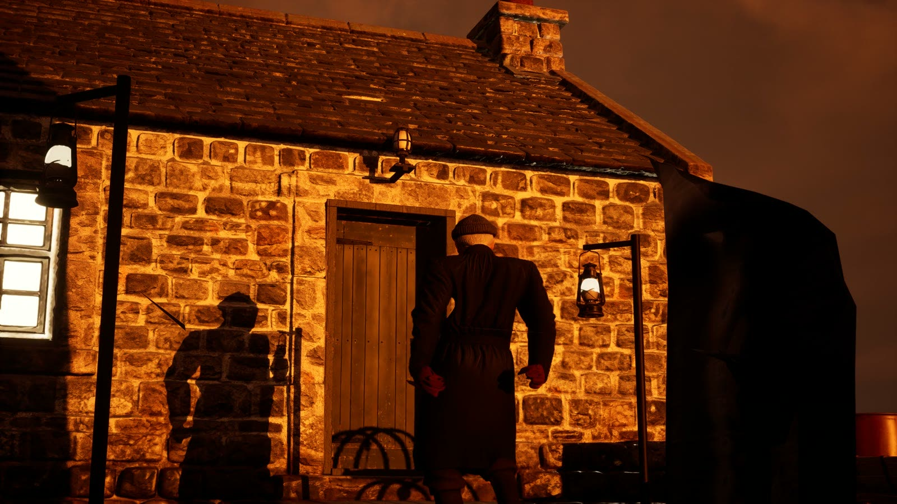
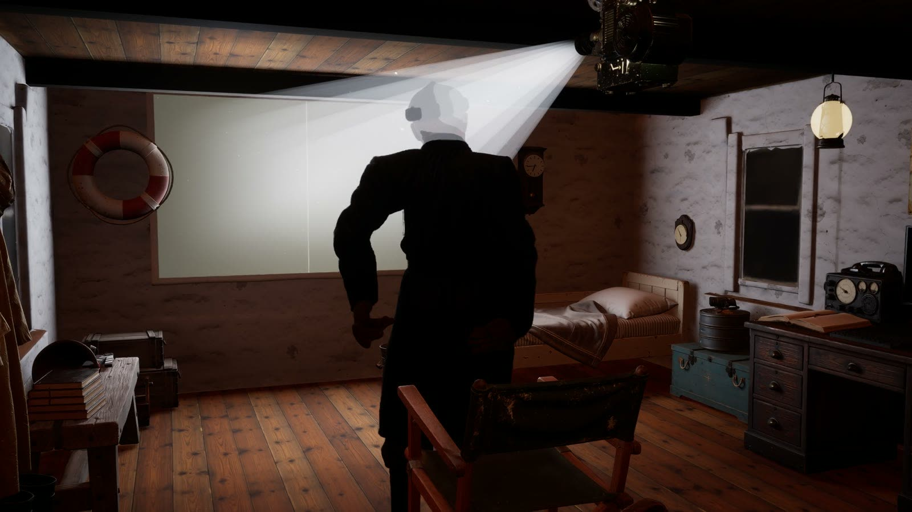
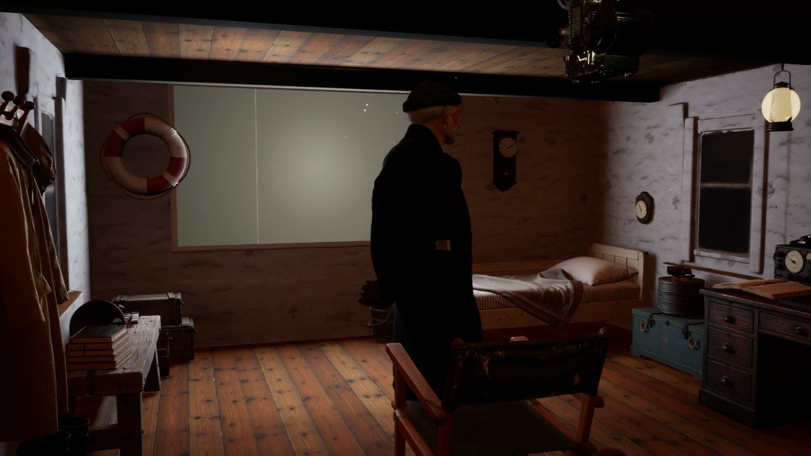
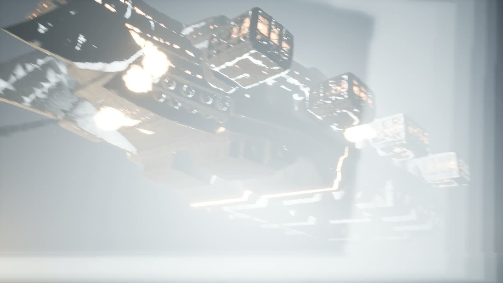
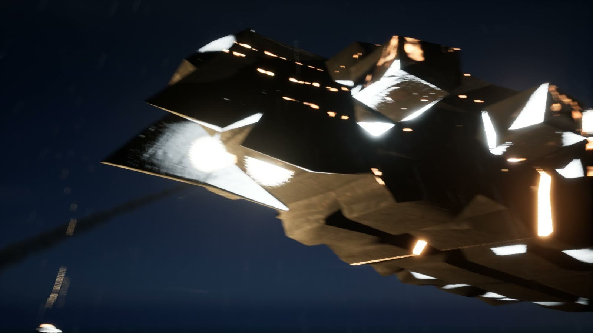
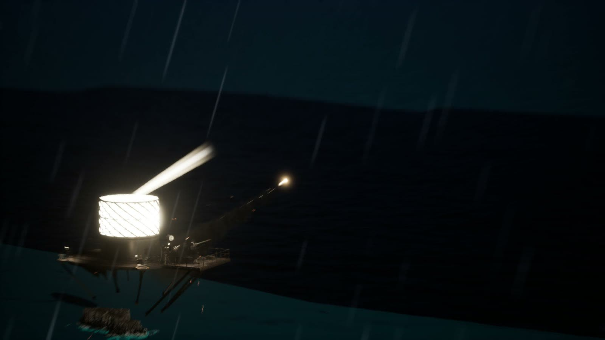
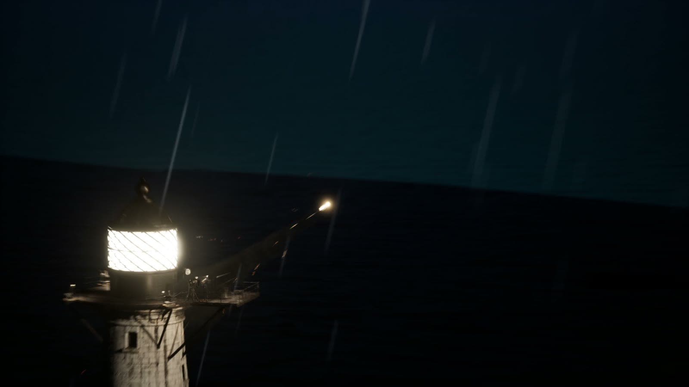

Day 4 Sunday 15 November
All times in this log are Danish time (CET, UTC+1): 6 hours ahead of New York, 9 hours ahead of Los Angeles. Point at a time to see it in your own.
The finale fixed, and recorded again for the video
10 pictures 6 min read
Checkpoint The second half of the gameplay video recorded again, 02:20
This entry covers late Saturday night to 03:00 on Sunday. It was written at 02:30, and its last part at 03:00.
After watching the gameplay video once more, the developer pointed out three things in its second half: the mothership's halves vanished halfway into the sea with no real splash, the keeper walked home with his arms held out stiffly, and the music's lift after its quiet moment came just before the rocket's launch instead of on it. Checking the recording frame by frame found more: a smeared first frame after some camera cuts, and the keeper's head turning pale as he walked through the projector's beam. All of them are fixed, and the whole finale was recorded again.
The halves go into the sea
A broken piece used to be removed as soon as its middle reached the sea. For a piece as big as half a mothership, that meant a 300-metre hull vanishing at the waterline. Now any piece over 15 metres across hits the water with a splash its own size and a row of smaller bursts along its length. It sinks over a few seconds, foaming, and is removed only once all of it is under.


Before Before: the half is gone the moment its middle touches the water


After After: it goes in with a splash its size, and sinks
The keeper's walk home, and round his chair
The keeper's motion in the ending is AI-generated with Kimodo, the motion model whose plugin ships with the engine (its text encoder is Meta's Llama 3: Built with Meta Llama 3). The first takes of the walk home and of the walk round his chair held his arms out from his body with the elbows bent. Both clips were generated again on the same paths and timings, and the prompts now describe relaxed arms. From several dozen new takes, the two used were picked by measuring the arms and checking the feet and hands against the doorstep and the chair:
- The walk home: upper arms 15 degrees out from the body instead of 32, swinging against his legs.
- The walk round the chair: 9 degrees instead of 23. He still lands on the seat with his hands on the armrests, and his hands never pass through them.
PromptA man in his fifties walks steadily forward with an upright, steady, tired gait, shoulders down, his arms hanging relaxed at his sides,…106 words
A man in his fifties walks steadily forward with an upright, steady, tired gait, shoulders down, his arms hanging relaxed at his sides, close to his body, swinging naturally and gently with each step. The man steps up onto a stone step and then over a raised threshold, upright and steady, shoulders down, his arms hanging relaxed at his sides, close to his body, swinging gently with each step. The man takes a few steady steps forward with his arms relaxed at his sides, close to his body, swinging gently with each step, then stops and stands upright, shoulders down, arms hanging relaxed at his sides.
PromptA man in his fifties turns around and walks steadily around a chair with an upright, steady, tired gait, shoulders down, his feet under his…88 words
A man in his fifties turns around and walks steadily around a chair with an upright, steady, tired gait, shoulders down, his feet under his hips, his arms hanging relaxed at his sides, close to his body, swinging gently and naturally with each step. The man turns his back to the chair with his arms relaxed at his sides and sits down on it slowly, upright, his hands coming to rest on the armrests. The man sits upright in the chair and rests, his hands on the armrests.


Before Before: arms held out stiffly


After After: arms relaxed, swinging with his steps
His head in the projector's beam
The beam is drawn as soft glowing cones, so wherever it lies between the camera and his head, it lightens his head. Saturday's fix dimmed the beam to a tenth while his head was in it. That was enough on his walk to the switch but not on his walk round the chair, where the remaining glow still left his cap pale and doubled. Now the beam goes fully dark while his head blocks it or passes in front of it, as a real head would block a projector, and comes back over a quarter of a second.


Before Before: the beam drawn over his head


After After: his head blocks the beam
Why the first frame after some cuts was smeared
The drone's film of the rocket and the ending's own camera both tell the engine when they cut, so that motion blur and the upscaler do not blend one shot into the next. But both run after the engine has already read the camera for that frame, so the message arrived one frame early, and the frame that actually jumped was blurred as if the camera had whipped across. The message now goes out on the frame that shows the jump. The rocket's hit on the mothership was the clearest case.


Before Before: the hit's first frames smeared


After After: sharp from the first frame
One more fault from Saturday night's entry is fixed as well. When the mothership died to the great lens, the finale placed the keeper at the lens, inside the lantern, and the drone flying along the rocket passed through the lantern's glass. He now always stands on the gallery beside the gun, wherever the killing blow came from.
The video's second half, recorded again
The fourth night and the ending were recorded again with all the fixes in, and the video's second half was cut again from the new recording. Every shot keeps its length and its place, so the music, the narration, the captions and the transitions stay where they were. Only the moment inside each shot was chosen again, frame by frame. The launch shot now starts 91 frames before the rocket leaves the tube, so the launch lands on the video's frame 1095 (36.5 seconds), exactly where the music comes back in after its quiet moment. In the last version it came 0.6 seconds later. Because the hit is sharp now, the video shows it instead of cutting past it. At 02:30 the developer watched it and chose it as the final gameplay video.
One more fault, spotted by the developer
Watching closely, the developer saw what the frame-by-frame checks had missed: a moment after the launch, as the drone pulls back, the lighthouse is not there. Only the lit lantern and the gallery float over the sea, with no tower, rock or hut beneath them. The fourth night in the video was won with the great lens. While the keeper works the lens, the game does not draw the lighthouse's own model, because from inside its thin lantern bars cross the view; the lamp room's wall and glass stand in its place. That was still the case when the drone filmed the finale from outside. Every player who won the fourth night at the lens would have seen it too. Now the lamp room is shown only while the keeper's own eyes have the picture. The finale was recorded once more, and the video was cut again with the same edit and the same timings (it runs 16 frames earlier in the new recording, so every cut point moved by the same amount). The launch is still on frame 1095. This version now plays on this log's front page.


Before Before: the lamp room's glass drum, and no lighthouse under it


After After: the lighthouse, whole
The package
The game was packaged again at 02:55 from the current code, with all of tonight's fixes, the lighthouse included:
- Size: 981.5 MB, packaged in 157 seconds, under the 1 GB the jam's upload page takes in the browser.
- Run from the zip: unpacked into a clean folder, it started off screen, kept running and opened no network port.
- The entry's checks, on this zip and the final video together, all passed: the zip's name, one game folder with the program in it, no project or source files, the C++ runtime installer inside, the video at 58.8 seconds, 1920x1080 with sound, and Epic's deadline still ahead.
The developer watches the new video, plays this package and hands in the entry himself.